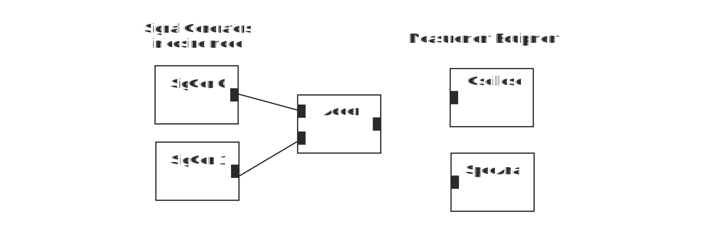

Build up a circuitry below and set frequency of signal generator 0 to 5 kHz and generator 1 to 50 kHz. Both to cosine mode and amplitude to 1 V.
Figure 1 Adder
1. Connect oscilloscope to output terminal of signal generator 0 and measure period of the output cosine waveform. It is
2. This corresponds to frequency
3. Measure output of signal generator 0 with spectrum analyzer. Frequency of the output signal is
4. Connect oscilloscope to output terminal of signal generator 1 and measure period of the output cosine waveform. It is
5. This corresponds to frequency
6. Measure output of signal generator 1 with spectrum analyzer. Frequency of the output signal is
7. Connect oscilloscope to output terminal of the adder. What do you see?
8. Connect spectrum analyzer to the output of the adder. Frequency components at the output are:
9. Change signal generator 0 to 10 kHz frequency and look at adder’s output by oscilloscope. You see
10. Connect spectrum analyzer to the output of the adder. Frequency components at the output are:
11. The new frequency component that appear in addition process are:
When you have answered all the questions you can submit your answers.
You passed test. You may now start Exercise 2: Impact of LPF on Signal Shape and Spectrum
Test failed. Consider again answers that are not correct